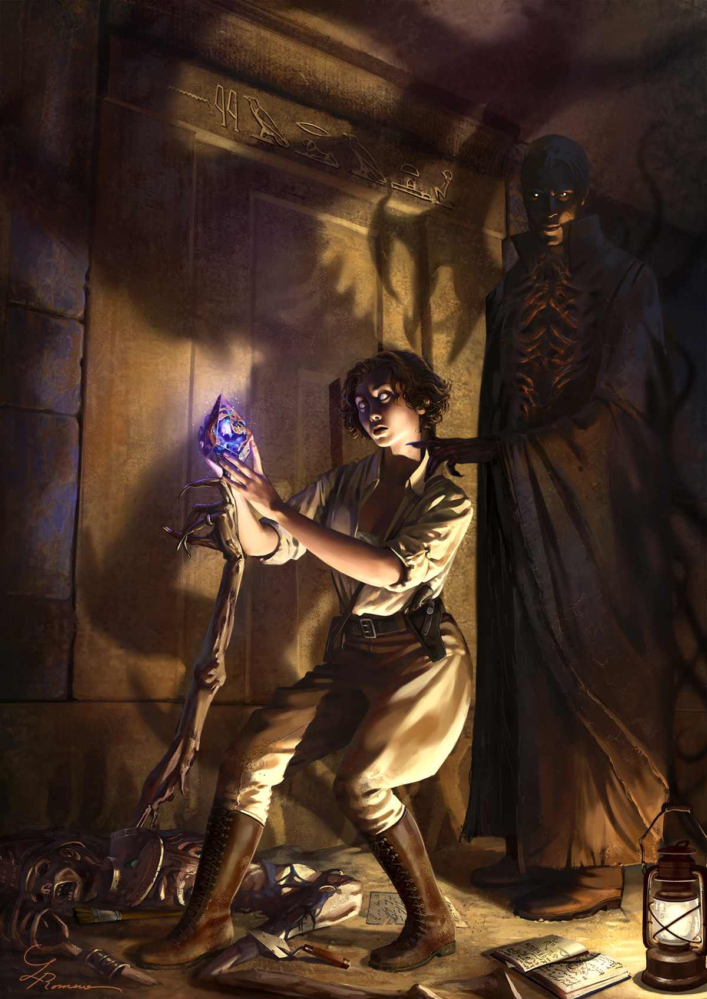

Les Scénario du bureau l' Arsenal
Scénario 1 : Soucis Médical
Scénario 2 : L'ombre à l'interieur des gens.
 Saint Etienne 2019 nous sommes le 5 Octobre et plusieurs mois ce sont écoulé dépuis l'incident de l'hopital Bellevue.
Enfin et fraichement arrivé sur saint etienne, vous deux collegue qui était monté à paris tenter de trouver quelque fourniseur financier pour votre bureau.
Jet d'entretien pour les deux et faire une moyenne
Je rapelle que vous vous connaissais bien, vous vous étiez séparer pour le bien du bureau.
que fait vous ?
- Les News
- on apprend quelque évenement grave, notament l'agression de paris au couteau.
- on apprend egalement que ya encore des manifestation concernant le climas
- on apprend que des youtubeur on ammaser des millions pour l'institut pasteur à la z event
- Les vert sont critiquer par leur supporter suite à leur defaite
- Une uzine de méons détruite de l'interieur sans effraction
1 semaine passe(12 Octobre)
- Les News
- agression à l'arme blanche à Orléans
- les Vert tonjours en chute libre
- l'institu pasteur remercie les 55 youtubeurs
- des erreurs dans le nouveau syteme d'impots
- l'enquete clos concernant l'usine, probleme de machine
1 semaine passe(19 Octobre)
- Les News
- agression à l'arme blanche à Bourges
- demission de l'entraineur chez les verts
- l'institu pasteur recherche des enseignants
- Le nouveau syteme d'impots réparer
- St Etienne 1er ville de france pour l'habitations
1 semaine passe(26 Octobre)
- Les News
- agression à l'arme blanche à Vichy
- nouveau entraineur pour les verts
- record du monde pour les don sur twitch pour lle z event
- Accident chimique pour l'usine a meons, affaire clos
1 semaine passe(2 Novembre)
- Les News
- agression à l'arme blanche à Lyon
- les prochain adversaire de st etienne se sera Lyon pour les quart de final de l1
1 semaine passe(9 Novembre)
- Les News
- agression à l'arme blanche à st tienne, a la maison de retraite de ORPEA - L'Hermitage, 4 Rue Claudius Buard, 42100 Saint-Étienne